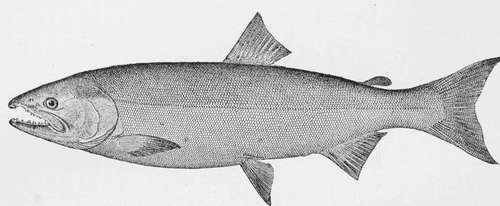

The Pacific Salmon
Description
This section is from the book "American Game Fishes", by W. A. Perry. Also available from Amazon: American Game Fishes: Their Habits, Habitat, and Peculiarities; How, When, and Where to Angle for Them.
The Pacific Salmon
ON the Pacific Coast there are found five species of Salmon, all of which, with the exception of one that is locally confined, entering one short, rapid river, range up the northwestern coast as far as the Arctic Circle, and even beyond to Bering Straits. These fishes occupy a very important position in regard to the welfare of the aboriginal population of the coast, and even of the interior, in furnishing them with their principal means of subsistence. The Salmon is, and was, of greater importance to the Siwash (this term includes all Indians speaking Chinook, and, in fact, all Indians between the Rocky Mountains and the Pacific, the northern line of California, and British Columbia) than the elk, mountain goat, moose, and deer combined. North of British Columbia it is the main staple. True, there is an abundance of the finest Halibut, Codfish, and Sturgeon, that the ocean can produce, to be found along the entire northern coast; but even these fishes, that supply the laboring people of the coasts of Europe with what to them are luxuries, are by the Indian and the Esquimau regarded with contempt, as being fit only to be eaten in times of threatened starvation, or when Salmon cannot be procured.
The species of Pacific Salmon are: the Quinnat, or Tyee Salmon; the Kisutch, or Blue-back Salmon; the Nerka, or Saw-qui Salmon; the Keta, or Cultus Salmon; the Quil-layute, or Oolahan Salmon.
The Quinnat, or Tyee Salmon, is the largest that occurs on the Pacific, and often reaches a weight of one hundred pounds. It was formerly very abundant in the Sacramento and Columbia Rivers, but the vast numbers caught and canned yearly have reduced the great schools of these fishes to but a tithe of their former numbers. They are abundant yet in the Frazer River, and in the rivers farther north, and are also caught in Puget Sound, but in limited numbers. They are a beautiful fish, and a gamy one. They take the trolling-spoon in salt water, or a hook, baited with Salmon-roe, in fresh water.
The Kisutch, or Blue-back Salmon, is the dude among Salmon, and is, next to the Tyee, the most valuable. It has not the rich, firm flesh of the Tyee, but is a delicious fish, and the flesh is of a true Salmon color. It is also a gamy fish, and is even a greater favorite with anglers than the Tyee, as it takes the spoon freely and fights desperately. This fish is known also as Coho. It reaches a weight of over twenty pounds, and it is in great demand with the commercial fishermen and canners.
The Nerka is but a rare visitant on Puget Sound, while on the Frazer River it is the principal spring Salmon, sometimes coming with the last run of the Tyee.
Perhaps one-half of the Salmon exported to England from the canneries of the Frazer were Saw-qui when they sported in that muddy stream. This fish never exceeds twelve or fourteen pounds in weight, and is condemned by anglers. When hooked he makes but little resistance, and comes tamely in.
The Keta, or Cultus (meaning bad or worthless) Salmon, otherwise known as the Dog Salmon, extends over the entire northern Pacific coast. It is found in every river, every lake, brook and streamlet, slough and ditch, that connect with the rivers that afford water enough for it to swim in, and is even said to be sometimes found floundering overland looking for water. Its flesh is white and worthless, except to the Indians.
Quinnat, Or California Salmon-Uncorhynchus Chonicha.
(Even crow is regarded as a delicacy with them.) The only thing to be admired about this fish is its determination. It has largely developed "get-there" qualities, and if it meets an obstacle in the stream that it can't leap over, it will try to climb over. Failing in this, it will ram against it with its nose until it kills itself.
When you open a can of Columbia River Salmon, if you find the meat white, insipid, and tasteless, you may safely conclude that some old martyr of this species furnished the contents. It grows to a weight of twelve pounds, takes the spoon, and makes a determined fight.
The Ouillayute is the smallest of the Salmon. It is found only in the Quillayute River, Clallam County, Washington. It is a short, thick fish, weighing about six pounds. It has never been classified by naturalists. The flesh is well flavored and firm. It also takes the spoon, and affords good sport. On account of the richness of its flesh, the Indians have named it the Oolahan, or Eulachon, after the Candlefish, and no greater compliment could they have paid it, for in their estimation the Candlefish is the most delicious morsel that swims.
These species of Salmon are of great importance to the white people of the northwest coast. Next to lumbering, the handling of these fishes gives employment to the greatest number of people. A great many Chinese, Indians, and "dagos" are also employed in this industry. An "off-year" in the Salmon run means serious commercial depression in this region, for the failure of the Salmon to come means the locking up of millions of dollars that would otherwise be distributed among the people.
I shall not here go into minute descriptions of the various canneries, or of their methods of handling the fish. The only allusion I will make is to the method of taking them.
In the early morning, boat after boat leaves the cannery wharf. These boats are skiffs twenty feet long, and each is manned by two men-the boatman and the net-handler. In the stern of the skiff a net of three-inch mesh, two hundred and fifty yards long, and six feet deep, is carefully coiled. To the brail-rope of this net empty five-gallon coal-oil cans are attached, one hundred feet apart. Arriving at the place selected for the day's work, the net-handler stands erect in the boat, and quickly pays out the net over the stern, the boatman meantime pulling for all he is worth. When the net is once launched in the river, it is allowed to drift with the current for half an hour, and then the skiff, which has drifted alongside, is rowed to the end of the net that was first placed in the river, and the process of drawing the net and killing the fish begins. If during the run of the Saw-qui, a fish will be found every few feet, caught in a mesh and held fast by the gills. The fish, in endeavoring to go up-stream, force their way in spite of every seeming obstruction, and when they meet the net try to force themselves through it. They succeed in forcing their heads through, but cannot put their bodies through the meshes of the net. In attempting to withdraw their heads, the twine becomes entangled in their gills, and the fate of poor Saw-qui is sealed. He is lifted into the boat and dispatched with a stout bludgeon. The net-tender then disentangles the fish from the net, and throws it into a crate, or on the bottom of the boat. Should there be more Salmon in the net than the skiff can carry, the nearest boat is signaled and comes to the aid of this crew, and the fish are taken at once to the cannery.
Continue to: